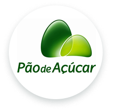
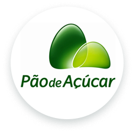
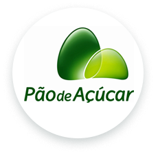
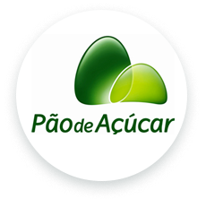

Nosso Clientes
Prestamos serviços para diferentes clientes, veja alguns deles aqui abaixo!

 


Na Fazenda Maria, unimos tecnologia e sustentabilidade para oferecer produtos frescos e saudáveis, direto do cultivo urbano para sua mesa. Nossa fazenda urbana se dedica à produção de hortaliças, ervas e vegetais sem o uso de agrotóxicos, proporcionando uma alternativa nutritiva e ecológica para a sua alimentação.
Entre em contatoNosso processo de compra é totalmente seguro, para que você possa adquirir nossos alimentos com tranquilidade e confiança. De nossa fazenda urbana para sua mesa, levamos saúde e sabor, com a garantia de um pagamento fácil e protegido!
Entre em contatoVeja depoimentos de nossos clientes logo abaixo!
Lisa Nakashima
"Fiz minha primeira compra na Fazenda Maria e estou super satisfeita! Os produtos são realmente frescos e de altíssima qualidade, e todos os detalhes da entrega foram exatamente como pedi. Fiquei impressionada com o cuidado e a atenção que eles têm com cada pedido. Finalmente encontrei uma fazenda urbana que entende e respeita as minhas exigências. Recomendo a todos!"
Milena Schimidt
"Acabei de receber meu pedido da Fazenda Maria e estou encantada! Além dos produtos serem frescos e de altíssima qualidade, a equipe foi extremamente atenciosa e cuidadosa com cada detalhe. Fizeram questão de entender e atender todas as minhas exigências, e isso fez toda a diferença. Dá para ver que eles realmente se preocupam com o cliente. Recomendo demais!"
Francisco Kim
"Minha experiência com a Fazenda Maria foi incrível! Os produtos chegaram fresquinhos e com a qualidade que eu esperava. Fiquei muito satisfeito, pois atenderam todas as minhas exigências e foram super cuidadosos com cada detalhe. É muito bom encontrar um lugar que realmente se preocupa com o cliente. Recomendo de olhos fechados. é uma equipe diferente e cuidadosa!"
Prestamos serviços para diferentes clientes, veja alguns deles aqui abaixo!

Seja um parceiro da Fazenda Urbana Maria e faça parte da transformação sustentável! Com o cultivo de alimentos frescos e saudáveis no coração da cidade, a Fazenda Maria oferece uma experiência única de conexão com a natureza e produção consciente. Juntos, podemos promover o bem-estar, fortalecer a agricultura local e contribuir para um futuro mais verde e saudável. Venha crescer com a gente e ajude a espalhar nossa missão de sustentabilidade e qualidade de vida.
Entre em contato